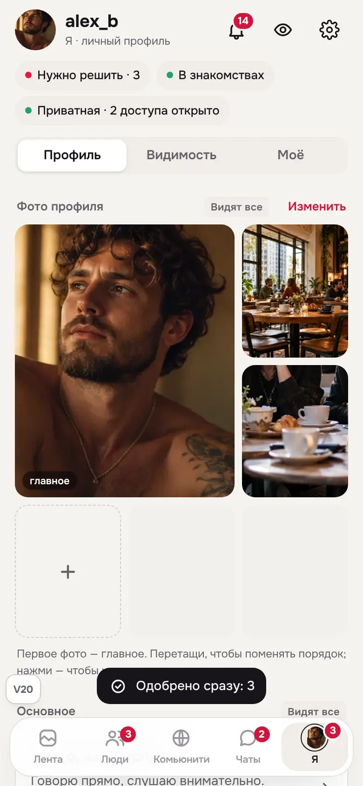
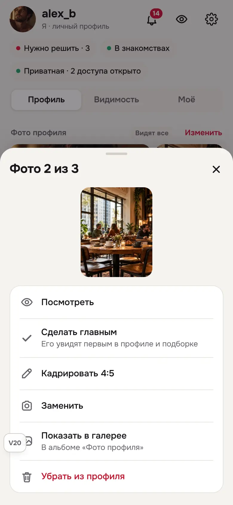
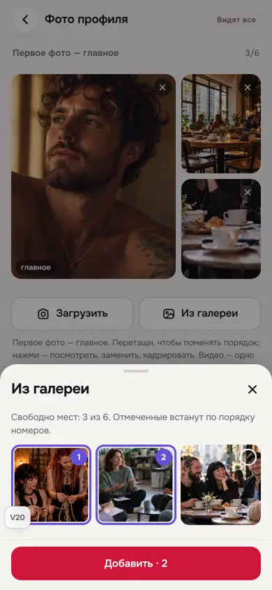
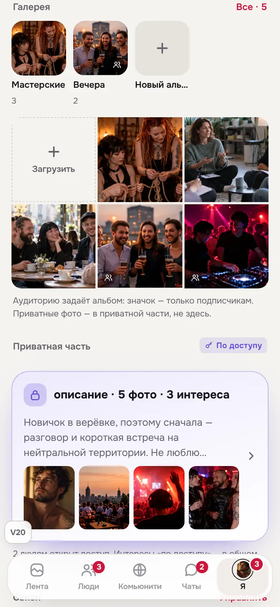
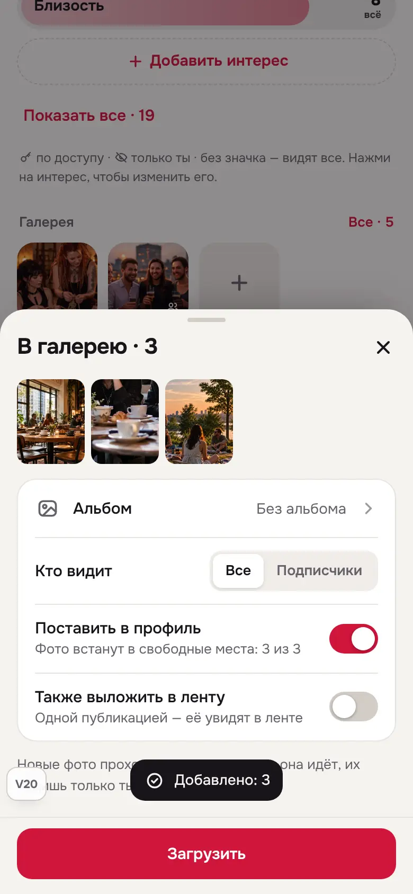
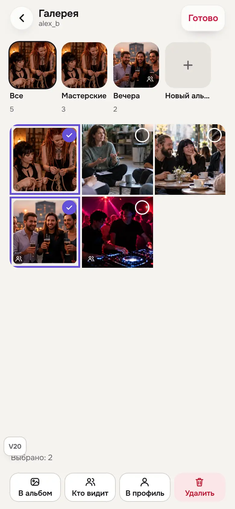
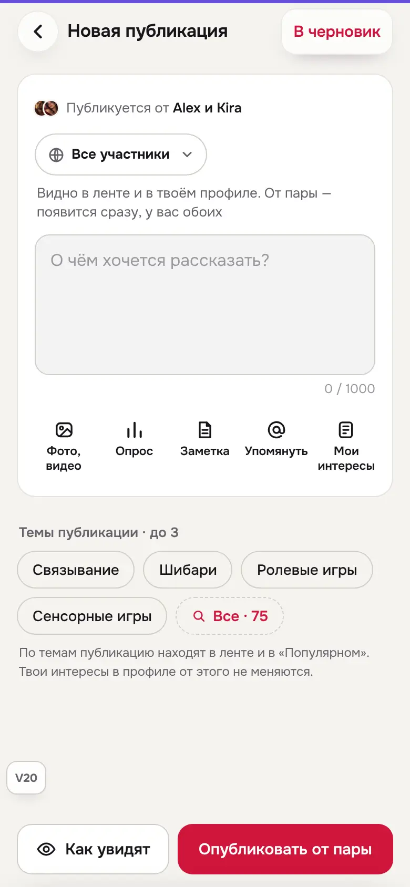
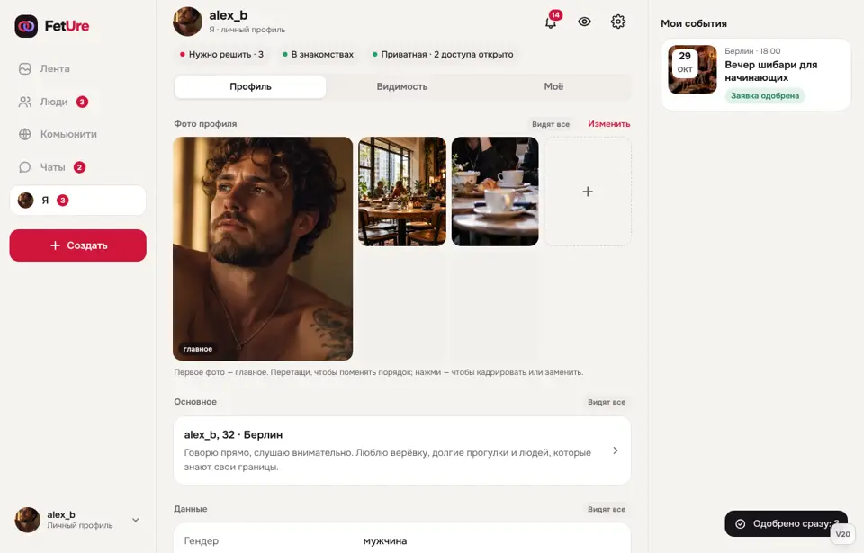

FetUre V20 — профиль, переключатель и фото
V20 исправляет то, как #1270 сделал правильную идею. Переключатель «Я / Мы» остаётся один, в доке, но стал аккуратным и больше не меняет режим втихую. Фото профиля меняются прямо на «Я» перетаскиванием. Загрузка в галерею больше не равна посту в ленте. Альбомы видны.
V19 (вместе с #1270) заморожена. Журнал — docs/design-reference/V20-CHANGELOG.md. Контракт — tests/prototype-v20-contract.mjs: правила V13, V14, V18, V19 плюс проверки V20. План с разбором #1270 владелец видел до начала работы.
Решения владельца
| Вопрос | Решение |
|---|---|
| Загрузка и лента | Выложить в ленту — по выбору: переключатель «Также выложить в ленту», по умолчанию выключен. |
| Смена «Я / Мы» | Только в доке. В композере, ответах и чате — строка «Публикуется от …» / «Ответ от …», её нельзя нажать. |
| Модерация фото профиля | Можно поставить сразу. Владелец видит с меткой «На проверке», остальные — после проверки. |
| Видео в профиле | Одно, и не на первом месте. |
Что из #1270 оставили, что заменили
- Оставили: нет кнопок выбора автора у композера, ответов и в профиле; нет метки «Мы» на сердечках; пара со своим фото показывает его; превью нового поста следует за доком.
- Заменили: «каждая загрузка — публикация», фото профиля как ссылки на посты, приватные фото как посты «по доступу», общую сетку публичного и приватного, лист «Раньше / Позже», док на экранах ввода и при клавиатуре.
- Вернули из V19: перетаскивание, кадрирование, замену, отдельные сетки приватных фото и видео.
Как это работает
Док и «Действовать как»
Аватар в доке — 24 px, как остальные значки. В «Мы» вокруг него фиолетовое кольцо с зазором, бейдж стоит на углу, а не на лице. Пара без своего фото — два лица участников, не буква. Нажатие открывает две строки и одну ссылку. Выбранная строка — сиреневая с галочкой. Вместо голой цифры написано, что ждёт: «3 новые симпатии · 1 запрос доступа». «Открыть мой профиль» открывает только текущий профиль и режим не меняет. На компьютере тот же выбор — маленькое окно у аватара внизу боковой панели (стрелки, Esc).
Фото профиля на «Я»
Блок выглядит так, как его видят другие: большое главное фото и пять маленьких. Свои фото перетаскиваются прямо здесь, порядок сохраняется сразу, в тосте есть «Отменить». Нажатие на фото — посмотреть, сделать главным, кадрировать 4:5, заменить, показать в галерее, убрать из профиля. Пустое место с «+» одно, остальные — бледные. Фото пары открывают редактор: изменения идут через один черновик и согласие партнёра.
Редактор фото
Та же раскладка, перетаскивание, кнопки «Загрузить» и «Из галереи». Из галереи можно отметить несколько фото — они встанут по номерам. Видео одно и не первым: лишнее не добавится, а видео на первом месте сдвинется с подсказкой.
Галерея и альбомы
На «Я» — обложки альбомов со счётчиками, «Новый альбом», «Загрузить» и последние фото. Значок на обложке — только подписчикам. Приватные фото здесь не появляются: они в приватной части.
Загрузка: файлы → один лист: альбом, кто видит, «Поставить в профиль», «Также выложить в ленту». Без ленты каждый файл — отдельный пункт галереи, в ленту он не попадает. С лентой — одна публикация. Новые фото проходят проверку. От пары — после согласия партнёра, если вы не доверяете друг другу.
В галерее есть «Выбрать»: отмечаешь несколько фото, внизу «В альбом», «Кто видит», «В профиль», «Удалить». Док на это время скрыт. Фото, которое стало «только подписчикам», уходит из профиля — профиль видят все.
На компьютере и с клавиатуры
Файлы можно бросить на фото профиля, редактор, галерею или приватную часть. Alt + стрелки переставляют фото в любой сетке с перетаскиванием, новое место озвучивается.
Экраны










Проверено
- Контракт V20 вместе с правилами V13, V14, V18 и V19 — проходит.
- Chromium, с настоящими файлами через окно выбора: загрузка в галерею и в профиль, перетаскивание, лист фото, «Из галереи», режим выбора, выбор профиля на телефоне и компьютере, автор в композере и ответах.
- Матрица: 3 персоны × RU/EN × 320/390/768/1440 × светлая/тёмная на 14 экранах (лента, выбор профиля, «Я» и «Мы», редактор фото, «Из галереи», галерея и режим выбора, загрузка, добавление фото профиля, приватная часть, композер в «Мы», «Как видят», чаты) — 576 состояний, без ошибок JS и горизонтального скролла. 96 состояний пропущены: у персон без пары нет режима «Мы», у новой персоны — галереи.
- Длинный, «враждебный» и слитный текст на 320 и 390 px — 66 состояний. Новые экраны чистые. В ленте слитные хэштеги без пробелов распирают экран — так же в V18 и V19, не связано с V20.
Не проверено: реальные устройства, перетаскивание долгим нажатием на телефоне, скринридеры, живая пара на двух клиентах, пользовательские тесты.